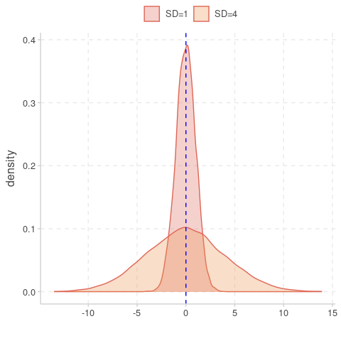

2 Descriptive statistics in R
The first thing we need to do is clarify the distinction between descriptive and inferential statistics. In simple terms, the former deals with the quantitative and/or visual description of a sample taken from the population, whereas the latter tries to make inferences about the properties of a population based on this sample. And this is an important point to remember: we usually never know the entire state of the population (or the underlying probability distribution that generated the data), we only have access to a (usually significantly smaller) sample of it. And statistics will help us to get a sense of how well this sample might represent the population and the uncertainty attached to any inferences we wish to make about it.
2.1 Univariate analysis
As defined earlier, descriptive statistics is concerned with the quantitative and/or visual description of a data sample. We can broadly distinguish two cases:
- a univariate analysis, where we describe a single variable, for example by its central tendency (e.g. mean or median) and dispersal (e.g. variance or quartiles)
- multivariate analysis, where our data sample consist of more than one variable and where we are interested in the relationship between pairs of variables (e.g. correlation or covariance).
Here we will introduce you the concept univariate analysis, and you are probably already familiar with most of the material dealt with in this section. We therefore only briefly touch upon some of them, showing how to do generate descriptive statistics in R - first by hand and then using some nifty R packages / functions that will make your life a lot easier.
Statistics that we will cover include:
- mean
- median
- standard deviation
- interquartile range
- skewness
Mean vs. median
As you will know, the mean and the median are two very different statistics. The first is the average value of a data sample, i.e. \(\mu = 1/n \sum y_i\) (with \(y_i\) being individual data points or values of your sample), whereas the median separates the lower half and upper half of a data sample (i.e. is the value in the middle if you were to order all values form smallest to biggest). How much these two differ, however, depends on how the data is distributed. To demonstrates this, let’s calculate both and compare for different distributions
# sample based on normal distribution
normSample <- rnorm(1000, mean = 10, sd = 1)
print(c(mean(normSample), median(normSample)))## [1] 9.965866 9.972984# sample based on normal distribution
poisSample <- rpois(1000, lambda = 10)
print(c(mean(poisSample), median(poisSample)))## [1] 9.944 10.000# sample based on normal distribution
expSample <- rexp(1000, rate = 0.1)
print(c(mean(expSample), median(expSample)))## [1] 9.583209 6.828290We can see that for the first two samples, both the mean and median are fairly similar. For the sample based on an exponential distribution, however, they are very different. Therefore, whether the mean is an adequate representation (or statistics) of your data crucially depends on how the data is distributed!
Standard deviation
The standard deviation (SD) is a measure of the dispersal of a set of values and how much these values vary from the sample mean. A low standard variation means that most values are close to the mean, whereas a high standard deviation means that values are spread far way from the mean (which in itself should give you an indication of the usefulness of using the mean to describe your samples in the first case). Mathematically, the standard deviation, usually denoted \(\sigma\), is given as \[ \sigma = \sqrt{ \frac{1}{n} \sum (y_i - \mu)^2 } \] However, it is much easier to understand this visually, here demonstrated by two normal distributions with the same mean but one with SD=1 and one with SD=4
data.frame(SD1 = rnorm(10000, sd = 1),
SD4 = rnorm(10000, sd = 4)) %>%
ggplot() +
geom_density(aes(x = SD1, fill = 'SD=1'), alpha = 0.3) +
geom_density(aes(x = SD4, fill = 'SD=4'), alpha = 0.3) +
geom_vline(xintercept = 0, col = 'blue', linetype = 'dashed') +
labs(x = '',
fill = '') +
theme(legend.position = 'top')## Warning: The `scale_name` argument of `discrete_scale()` is deprecated as of ggplot2 3.5.0.
## This warning is displayed once every 8 hours.
## Call `lifecycle::last_lifecycle_warnings()` to see where this warning was generated.
Interquartile range
Another measure of the spread of data is the so-called interquartile range, or IQR for short. The IQR is defined as the difference between the 75th percentile (third quartile, or Q3) and the 25th percentiles of the data (lower quartile, or Q1). Therefore, the IQR = Q3 − Q1.
In R we can get the IQR’s simply through the function IQR()
## [1] 1.375224## [1] 4## [1] 10.74354IQR’s form the basis of box-and-whisker plots, where the boxes show the median (Q2) and interquartile range (Q1 and Q3) and the lower and upper whiskers are defined as \(Q1 - 1.5 \times IQR\) and \(Q3 + 1.5 \times IQR\), respectively. Data points outside these rangers are considered outliers.
sampleDist <- data.frame(normal = normSample,
poisson = poisSample,
exponential = expSample)
ggplot(sampleDist) +
geom_boxplot(aes(x = 1, y = normal, fill = 'normal')) +
geom_boxplot(aes(x = 2, y = poisson, fill = 'Poisson')) +
geom_boxplot(aes(x = 3, y = exponential, fill = 'exponential')) +
scale_x_continuous(breaks = c(1, 2, 3),
labels = c('Normal', 'Poisson', 'Exponential')) +
labs(x = 'Distribution',
y = 'Value') +
theme(legend.position = '',
text = element_text(size=14))Skewness
Skewness tells us whether the data is symmetric or asymmetrically distributed, an we can distinguish between a positive skew, where the right tail of the distribution is longer, and negative skew, where the left tail is longer. Let’s have a look at our three samples based on the normal, Poisson and exponential distribution:
sampleDist %>%
gather(distribution, value, normal:exponential) %>%
ggplot(aes(x = value, fill = distribution)) +
geom_density() +
facet_wrap(~distribution, scales = 'free') +
geom_vline(xintercept = 10, col = 'blue', linetype = 'dashed') +
labs(x = '',
fill = '') +
theme(legend.position = '')What is clear is that the exponential distribution has a significant positive skew. The R library moments provides useful functions to measure the shape of a distribution. Let’s use this here and see whether it agrees with our assessment by eye
# if you do not have this library, install it with install.packages("moments")
library(moments)
# calculate skewness of normal-based samples
skewness(normSample)## [1] -0.02358933## [1] 0.2504185## [1] 1.793003The results are very much as expected, with the sample based on the exponential distribution being by far the most skewed. And this offers one explanation for why the mean and median differs so much: although the bulk of the data lies on the left hand side, the long tail to the right has a significant effect on the mean, such that it is no longer representative of the average value of a data sampled from this distribution (i.e. most values would be smaller than the mean).
Note, although the skewness for the samples based on the normal distribution is also positive, the value is very small. The same goes for the ones based on the Poisson distribution. What shall we do with this information? I.e. is there evidence that the they are all skewed and hence sufficiently different from a normal distribution? Thankfully the moments package provides us with the tool to check this statistically based on kurtosis, which is a measure of how much of the data is found in the tails of the distribution.
Kurtosis
The kurtosis of a distribution is a measure of whether or not it is heavy-tailed or light-tailed relative to a normal distribution:
- the kurtosis of a normal distribution is 3
- if the kurtosis is <3, this means that it has fewer and less extreme outliers than the normal distribution
- if the kurtosis is >3, this means that it has more outliers than the normal distribution.
Note: some formulars substract 3 from the kurtosis, resulting in either negative or positive values (with the normal distribution being 0)
The moments package also provides the functionality to calculate the kurtosis of a data sample. For our data this looks like
## [1] 2.922701## [1] 2.905605## [1] 7.846492Once again, the last data sample stands out by having a kurtosis much greater than 3, meaning it has far more outliers than would be expected if the data came from a normal distribution (as can be seen in the boxplot above, where outliers are indicated by open circles).
As mentioned earlier, moments offers a statistical test (the so-called Jarque-Bera Normality Test), which compare a given data sample to a normal distribution, with the Null Hypothesis (H\(_0\)) being that the data has a skewness and kurtosis that matches a normal distribution. Let’s put this to the test for our three samples.
##
## Jarque-Bera Normality Test
##
## data: normSample
## JB = 0.3417, p-value = 0.8429
## alternative hypothesis: greater##
## Jarque-Bera Normality Test
##
## data: poisSample
## JB = 10.823, p-value = 0.004465
## alternative hypothesis: greater##
## Jarque-Bera Normality Test
##
## data: expSample
## JB = 1514.5, p-value < 2.2e-16
## alternative hypothesis: greaterAnd this provides evidence that the data samples based on the Poisson and exponential distribution are statistically different from the normal distribution.
Data summaries
The reason we care about univariate statistics is that most downstream analyses and statistical tests intrinsically rely on them. For example, we often report on the mean of some numeric variable, such as age; however, as we have seen, the mean is not a good representative in case the data is very skewed, in which case the median is a better statistic. Comparing two populations is often done using a t-test, which not only compares their means but also makes very strong assumptions about the distribution. It is therefore crucial to get a good overview of our data before we start with the analyses.
As we have seen, getting summary statistics by hand is relatively easy but can become cumbersome for large datasets with many variables. Thankfully, there are plenty of R functions out there that make our lives a lot easier. First, we are going to use inbuilt functions (that do not rely on external libraries) and then briefly introduce the summarytools package.
One of the easiest way to get a summary overview of the data is to use the inbuilt summary() function
## remember to read in the data, in case you start a new session
# tobacco <- read_csv('tobacco.csv') %>%
# mutate(gender = factor(gender),
# age.gr = factor(age.gr),
# smoker = factor(smoker),
# diseased = factor(diseased),
# disease = factor(disease))
summary(tobacco)## gender age age.gr BMI smoker
## F :489 Min. :18.0 18-34:258 Min. : 8.826 No :702
## M :489 1st Qu.:34.0 35-50:241 1st Qu.:22.927 Yes:298
## NA's: 22 Median :50.0 51-70:317 Median :25.620
## Mean :49.6 71 + :159 Mean :25.731
## 3rd Qu.:66.0 NA's : 25 3rd Qu.:28.649
## Max. :80.0 Max. :39.439
## NA's :25 NA's :26
## cigs.per.day diseased disease samp.wgts
## Min. : 0.000 No :776 Hypertension: 36 Min. :0.8614
## 1st Qu.: 0.000 Yes:224 Cancer : 34 1st Qu.:0.8614
## Median : 0.000 Cholesterol : 21 Median :1.0442
## Mean : 6.782 Heart : 20 Mean :1.0000
## 3rd Qu.:11.000 Pulmonary : 20 3rd Qu.:1.0494
## Max. :40.000 (Other) : 91 Max. :1.0625
## NA's :35 NA's :778This summary provides us with some of the most important information about our data. Besides revealing the different data types and data ranges, plus summary statistics, we can also get an idea how much data is missing for what variable. Furthermore, for categorical variables we also get information about how many observations fall into the different categories.
Regarding categorical variables, we are often interested how these are distributed, not just across the whole data but also with respect to other categorical variables, in which case we refer to cross-tabulation or contingency tables. Even though this is not strictly part of univariate analysis, it makes sense to show how we can use the inbuilt table() function to easily tabulate categorical data.
##
## No Yes
## 776 224## create a contingency table of disease status stratified by gender + add cat names
table(Diseased = tobacco$diseased,
Gender = tobacco$gender)## Gender
## Diseased F M
## No 378 379
## Yes 111 110We can go one step further and obtain stratified summary statistics using the inbuilt aggregate() function, which we here use to get the mean age and mean BMI stratified by gender and disease status
## gender diseased age BMI
## 1 F No 48.59270 25.91337
## 2 M No 48.57300 25.11816
## 3 F Yes 52.95283 26.81004
## 4 M Yes 53.60577 26.01160Based on this table we would conclude that diseased individuals are on average older and have a higher BMI than disease-free individuals and with not discernible difference between males and females. In later sections we will learn hot to test this statistically.
Before moving on it might be worth it to show how the same can also be achieved using dplyr (part of the tidyverse)
tobacco %>%
filter(!is.na(age) & !is.na(BMI) & !is.na(gender) & !is.na(diseased)) %>%
group_by(gender, diseased) %>%
summarise(mean_age = mean(age),
mean_BMI = mean(BMI))## # A tibble: 4 × 4
## # Groups: gender [2]
## gender diseased mean_age mean_BMI
## <fct> <fct> <dbl> <dbl>
## 1 F No 48.6 25.9
## 2 F Yes 53.0 26.8
## 3 M No 48.6 25.1
## 4 M Yes 53.6 26.0filter(!is.na(age) & !is.na(BMI) & !is.na(gender) & !is.na(diseased)) achieve, and what happens is we run the code without?
To finish off this section we briefly introduce the summarytools package, which provides a number of useful tools to help us to summarise our data. The first tool, or function, is dfsummary(), which can be seen as an extension to the inbuilt summary() and provides us with almost everything we need in one go.
## Data Frame Summary
## tobacco
## Dimensions: 1000 x 9
## Duplicates: 2
##
## --------------------------------------------------------------------------------------------------------------
## No Variable Stats / Values Freqs (% of Valid) Graph Valid Missing
## ---- -------------- ------------------------- --------------------- --------------------- ---------- ---------
## 1 gender 1. F 489 (50.0%) IIIIIIIIII 978 22
## [factor] 2. M 489 (50.0%) IIIIIIIIII (97.8%) (2.2%)
##
## 2 age Mean (sd) : 49.6 (18.3) 63 distinct values . . . . . : 975 25
## [numeric] min < med < max: : : : : : . : : : : (97.5%) (2.5%)
## 18 < 50 < 80 : : : : : : : : : :
## IQR (CV) : 32 (0.4) : : : : : : : : : :
## : : : : : : : : : :
##
## 3 age.gr 1. 18-34 258 (26.5%) IIIII 975 25
## [factor] 2. 35-50 241 (24.7%) IIII (97.5%) (2.5%)
## 3. 51-70 317 (32.5%) IIIIII
## 4. 71 + 159 (16.3%) III
##
## 4 BMI Mean (sd) : 25.7 (4.5) 974 distinct values : 974 26
## [numeric] min < med < max: : : : (97.4%) (2.6%)
## 8.8 < 25.6 < 39.4 : : :
## IQR (CV) : 5.7 (0.2) : : : : :
## . : : : : : .
##
## 5 smoker 1. No 702 (70.2%) IIIIIIIIIIIIII 1000 0
## [factor] 2. Yes 298 (29.8%) IIIII (100.0%) (0.0%)
##
## 6 cigs.per.day Mean (sd) : 6.8 (11.9) 37 distinct values : 965 35
## [integer] min < med < max: : (96.5%) (3.5%)
## 0 < 0 < 40 :
## IQR (CV) : 11 (1.8) :
## : . . . . . .
##
## 7 diseased 1. No 776 (77.6%) IIIIIIIIIIIIIII 1000 0
## [factor] 2. Yes 224 (22.4%) IIII (100.0%) (0.0%)
##
## 8 disease 1. Cancer 34 (15.3%) III 222 778
## [factor] 2. Cholesterol 21 ( 9.5%) I (22.2%) (77.8%)
## 3. Diabetes 14 ( 6.3%) I
## 4. Digestive 12 ( 5.4%) I
## 5. Hearing 14 ( 6.3%) I
## 6. Heart 20 ( 9.0%) I
## 7. Hypertension 36 (16.2%) III
## 8. Hypotension 11 ( 5.0%)
## 9. Musculoskeletal 19 ( 8.6%) I
## 10. Neurological 10 ( 4.5%)
## [ 3 others ] 31 (14.0%) II
##
## 9 samp.wgts Mean (sd) : 1 (0.1) 0.86!: 267 (26.7%) IIIII 1000 0
## [numeric] min < med < max: 1.04!: 249 (24.9%) IIII (100.0%) (0.0%)
## 0.9 < 1 < 1.1 1.05!: 324 (32.4%) IIIIII
## IQR (CV) : 0.2 (0.1) 1.06!: 160 (16.0%) III
## ! rounded
## --------------------------------------------------------------------------------------------------------------The next function we introduce, ctable(). is an extension to the table() function mentioned earlier
## Cross-Tabulation, Row Proportions
## smoker * diseased
## Data Frame: tobacco
##
## -------- ---------- ------------- ------------- ---------------
## diseased No Yes Total
## smoker
## No 603 (85.9%) 99 (14.1%) 702 (100.0%)
## Yes 173 (58.1%) 125 (41.9%) 298 (100.0%)
## Total 776 (77.6%) 224 (22.4%) 1000 (100.0%)
## -------- ---------- ------------- ------------- ---------------This does not seem to offer much more, except that we can easily ask it to run a statistical test (\(\chi^2\)-test) on the resulting table
## Cross-Tabulation, Row Proportions
## smoker * diseased
## Data Frame: tobacco
##
##
## -------- ---------- ------------- ------------- ---------------
## diseased No Yes Total
## smoker
## No 603 (85.9%) 99 (14.1%) 702 (100.0%)
## Yes 173 (58.1%) 125 (41.9%) 298 (100.0%)
## Total 776 (77.6%) 224 (22.4%) 1000 (100.0%)
## -------- ---------- ------------- ------------- ---------------
##
## ----------------------------
## Chi.squared df p.value
## ------------- ---- ---------
## 91.7088 1 0
## ----------------------------Without going into much of the details at this point, the p.value of 0 indicates that there is strong statistical evidence that disease status is dependent on smoking - pretty much as we would expect.
A slightly more useful addition is when we combine ctable with stby, which allows us to create contingency tables with respect to a third categorical variable; for example
## Cross-Tabulation, Row Proportions
## diseased * gender
## Data Frame: tobacco
## Group: smoker = No
##
## ---------- -------- ------------- ------------- ----------- --------------
## gender F M <NA> Total
## diseased
## No 293 (48.6%) 299 (49.6%) 11 (1.8%) 603 (100.0%)
## Yes 49 (49.5%) 47 (47.5%) 3 (3.0%) 99 (100.0%)
## Total 342 (48.7%) 346 (49.3%) 14 (2.0%) 702 (100.0%)
## ---------- -------- ------------- ------------- ----------- --------------
##
## Group: smoker = Yes
##
## ---------- -------- ------------- ------------- ---------- --------------
## gender F M <NA> Total
## diseased
## No 85 (49.1%) 80 (46.2%) 8 (4.6%) 173 (100.0%)
## Yes 62 (49.6%) 63 (50.4%) 0 (0.0%) 125 (100.0%)
## Total 147 (49.3%) 143 (48.0%) 8 (2.7%) 298 (100.0%)
## ---------- -------- ------------- ------------- ---------- --------------Finally we are going to mention the tableby() function of the arsenal package, which is a highly customisable and powerful tool to provide detailed and publication-ready data summaries (more information can be found here).
#load required library
library(arsenal)
# create a simple table
tab1 <- tableby(diseased ~ gender + smoker + BMI + age, data=tobacco)
summary(tab1)| No (N=776) | Yes (N=224) | Total (N=1000) | p value | |
|---|---|---|---|---|
| gender | 0.939 | |||
| N-Miss | 19 | 3 | 22 | |
| F | 378 (49.9%) | 111 (50.2%) | 489 (50.0%) | |
| M | 379 (50.1%) | 110 (49.8%) | 489 (50.0%) | |
| smoker | < 0.001 | |||
| No | 603 (77.7%) | 99 (44.2%) | 702 (70.2%) | |
| Yes | 173 (22.3%) | 125 (55.8%) | 298 (29.8%) | |
| BMI | 0.010 | |||
| N-Miss | 22 | 4 | 26 | |
| Mean (SD) | 25.532 (4.448) | 26.414 (4.567) | 25.731 (4.488) | |
| Range | 8.826 - 39.439 | 10.346 - 39.208 | 8.826 - 39.439 | |
| age | 0.002 | |||
| N-Miss | 18 | 7 | 25 | |
| Mean (SD) | 48.609 (18.019) | 53.069 (18.839) | 49.602 (18.289) | |
| Range | 18.000 - 80.000 | 18.000 - 80.000 | 18.000 - 80.000 |
2.2 Multivariate analysis
In a multivariate analysis we are usually interested in the relationship between pairs of variables. Here we will briefly go through three commonly used methods to examine how two or more variables are related:
- contingency tables, which we have already come across in the previous section
- Pearson correlation
- Spearman rank correlation
Contingency tables
Contingency tables are types of tables that display the frequency distribution of two variables against each other. As an example, say we had data from a clinical trial where patients were given either a treatment or a placebo and we are interested in how many people recovered from a disease within 5 days. In each arm we had 100 individuals and in the treatment group 73 individuals recovered and in the placebo group 64. In table format this would thus look like this
| teatment | recovered | disease |
|---|---|---|
| drug A | 73 | 27 |
| placebo | 64 | 36 |
We can see that there were more individuals who recovered in the treatment arm of the study. But how do we know that this was not due to chance? To answer this question we have to briefly tap into inferential statistics. And two common methods to provide functions to perform statistical tests on contingency tables: Pearson’s chi-squared test and Fisher’s exact test. We are not going into the details of where they differ but only mention that Fisher’s exact test is non-parametric, typically defined on a 2 x 2 contingency table, and, importantly, works with small sample sizes. The chi-squared (or \(\chi^2\)) test, on the other hand, works on more than one variables but usualy requires larger sample sizes.
Pearson’s chi-squared test
Perform a chi-squared test in R is straightforward using the chisq.test() function.
# define our contingency table
trial <- data.frame(recovered = c(73, 64),
disease = c(27, 36))
# add row names (not necessary)
row.names(trial) <- c('drug A', 'placebo')
# run test
chisq.test(trial)##
## Pearson's Chi-squared test with Yates' continuity correction
##
## data: trial
## X-squared = 1.483, df = 1, p-value = 0.2233Because data can come in different formats, here we provide an example of how to create a simple contingency table if your data only had the recorded outcome, for example as recovered / not recovered or recovered yes / no, stored in two columns, one for the treatment arm and one for the placebo arm.
# recorded outcome recovered yes / no
trialData <- data.frame(drug = c(rep('recovered',73), rep('not recovered', 27)),
placebo = c(rep('recovered',64), rep('not recovered', 36)))
# first turn into "tidy" format
trialData <- trialData %>%
gather(treatment, outcome, drug:placebo)
# create a contingency table
contTable <- table(trialData)
# perform chi-sq test
chisq.test(contTable)##
## Pearson's Chi-squared test with Yates' continuity correction
##
## data: contTable
## X-squared = 1.483, df = 1, p-value = 0.2233Fisher’s exact test
Fisher’s exact test work in a very similar way and directly on a 2 x 2 contingency table. For large sample sizes you will notice that both test give you similar test statistics, but as mentioned, it is more powerful when sample sizes are small.
##
## Fisher's Exact Test for Count Data
##
## data: contTable
## p-value = 0.2232
## alternative hypothesis: true odds ratio is not equal to 1
## 95 percent confidence interval:
## 0.3438828 1.2516078
## sample estimates:
## odds ratio
## 0.6589328As you will have noticed, this test works on and also reports odds ratio, which is a handy “side effect” of using this function.
Pearson correlation
The aim of the Pearson correlation coefficient, or most commonly referred to simply as correlation coefficient, is to establish a line of best fit through a dataset of two variables and measure how far away the data are from the expected values (the best fit line). Values range between +1 (perfect positive correlation) to -1 (perfect negative correlation), and any value in between. Here are some examples
## `geom_smooth()` using formula = 'y ~ x'To calculate the correlation coefficient in R between two vectors \(x\) and \(y\) we simply call the cor(x,y) function. And if we are further interested in whether the correlation (or lack of it) is statistically significant we can use the cor.test(x,y) function.
ggplot and add a linear regression line (remember geom_smooth()?). Then test whether there is a correlation between the two variables and if so, test whether this is statistically significant.
\(~\)
### Spearman’s rank correlation {-}
In comparison to Pearson’s correlation, Spearman’s rank correlation is a non-parametric measure of how the ranking of two variables are correlated. In fact, the Spearman correlation is equal to the Pearson correlation between the rank values of two variables. So instead of comparing the values, here we compare their ranks, or their indices when ordered from smallest to largest. As before, the values for Spearman’s rho (\(\rho\)) can range from -1 to +1. Without providing any more detail, here is an example of how to calculate Spearman’s rho in R
Age <- c(9, 11, 1, 7, 6, 5, 10, 3, 4, 4)
OD <- c(478, 755, 399, 512, 458, 444, 716, 399, 491, 456)
# use the same function as before but define method = 'spearman'
cor(Age, OD, method = 'spearman')## [1] 0.8597561## Warning in cor.test.default(Age, OD, method = "spearman"): Cannot compute exact
## p-value with ties##
## Spearman's rank correlation rho
##
## data: Age and OD
## S = 23.14, p-value = 0.001424
## alternative hypothesis: true rho is not equal to 0
## sample estimates:
## rho
## 0.8597561Correlation vs. causation
Beware: even a very high correlation between two variables does not infer causality - causality can only be inferred through careful experimental design in a well-controlled setting. A good example how looking purely at correlation can be misleading is this one (taken from Spurious Correlations)